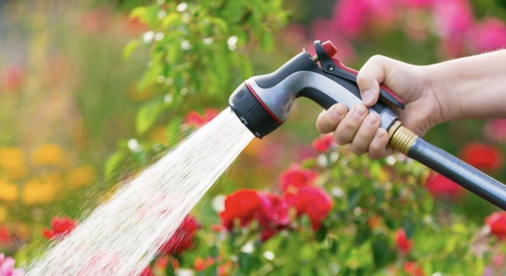

Locsolás

- Először is köszi szépen, hogy gondoskodsz a növényekről! Nagyon örülnek neki, és meghálálják, mert nem száradnak ki, és szépen növekednek.
- A locsolást minden második nap reggel, vagy késő délután (sötétedés előtt) el kell végezni.
- Kezdjük azokkal a növényekkel, amiket a locsolócsövekkel tudsz megöntözni. Ennek az elkezdéséhez be kell kapcsolni a szivattyút és meg kell nyitni a csapot a kútnál, tehát ezek a részletes lépések:
- Kimenni a kis házhoz, kinyitni az ajtót kulccsal
- Ahogy benyitsz, az ajtó mögött, jobbra van egy sötétzöld elosztó, amely ki/bekapcsolható. Ezt be kell kapcsolni: a lámpa pirossal világít. Ilyenkor a szivattyú elindul egy kis időre.
- Utána a kútnál, ahol a locsolócső csatlakoztatva van, meg kell nyitni a fekete csapot. Nyitott állásban a csap karja párhuzamos a csővel. Elzárt állapotban merőleges. Ilyenkor is bekapcsolhat a szivattyú, ez normális.
- Meg kell keresni a cső végét, ahol a szórófej van. A locsólófej használatával a locsolás elkezdhető.
- Nézzük, hogy hátul, ahol a medence is áll, milyen növényeket kell meglocsolni, és mennyi vizet igényelnek:
- Van itt négy magaságyás (2 paradicsomokkal, 2 paprikákkal és uborkákkal) / ezeket addig kell locsolni, amíg a vizet a föld beissza, és nem áll meg rajtuk a víz 1-2 cm-nél jobban. Ez kb. 15 másodperc ágyásonként. Inkább többet kapjanak, mint kevesebbet. Nehéz túlöntözni őket.
- A magaságyások szomszédságában laknak még bazsalikomok ládákba ültetve, ezeknek elég 2-3 másodperc, amíg átnedvesedik a földjük. Van 4 paradicsom is nagy kerek műanyag "cserepekbe" ültetve. Ezeknek mehet addig a víz, amíg a felső peremen túl nem csordulna, kb. 5-10 másodperc.
- Ezekhez közel van még egy leander, és egy rozmaring is. A leander, mint a különálló paradicsomok (sok víz), a rozmaring, mint a bazsalikomok (kevesebb víz).
- A kisház tövében is van jónéhány növény. Két növény a földön kerek cserépben, 4 ládában pedig chillik. Ezeket a bazsalikomokhoz hasonlóan nem kell nagyon meglocsolni, csak maradjon nedves földjük. Van még jónéhány leander is a fal tövében. Ezeknek mehet bőségesen víz, a peremig telenyomni a cserepeket.
- A következő csoportosulás a filagória oldalában, a földön lakik. Ezeket sem kell nagyon durván meglocsolni, csak annyira, hogy nedves legyen a földjük, de ne álljanak a vízben.
- Ugyanígy az az öt növény (fehér virágú petúniák), amik fel vannak lógatva. Ha nedves a földjük, akkor csak keveset kapjanak.
- Most következhet az első, kerítés melletti rész, ahol a cseresznye, és meggyfa is áll:
- Mivel ezeknek a növényeknek egy része nem érhető el egy csővel, ezért össze kell csatlakoztatni kettőt:
- El kell zárni a kútnál a fekete csapot.
- Kiengedni a nyomást a szórófejnél.
- A csövet előrehúzni oda, ahol a másik cső kezdődik (Ford előtt).
- Szórófej le, a két cső össze, a szórófej a másik cső végére.
- Megnyitni a kútnál a fekete csapot.
- A kerítés mellett, a műhelynél, a Ford mögött vannak a málnák. Nem kötelező locsolni őket, de nem is árt nekik.
- Utána cukkinik és tökök vannak, amiknek fontos a locsolás. A tövükhoz kell tartani a fejet (a levelekre ne nagyon menjen víz) és 5-10 másodpercig locsolni őket.
- Aztán a szedrek vannak, azok ugyanúgy, mint a málnák.
- Megint cukkinik, és tökök, összesen öt tő. Locsolás, mint az előző cukkiniknél.
- Maradt még négy magaságyás. Egy üres (ez kimaradhat) és három mindenféle növényekkel (cékla, chilli, paprikák, uborkák, dísztök). Ezeknek mehet alaposan víz, mint a hátsó magaságyásoknál.
- A ház bejáratánál vannak még ültetett virágok, beton virágládában, illetve kerek cserepekben. Ezeknek kevesebb víz is elég, 1-2 másodpercnyi locsolás.
- A locsolás befejéze után maradhat így összeszerelve a cső. Ekkor a következő alkalommal fordított sorrendben, először elöl, majd hátul lehet locsolni, a cső szétszedésével. Annak sincs akadálya, hogy egyben maradjon a két cső, de szerintem azt macerás húzgálni, én szét szoktam szedni inkább.
- FONTOS! Amikor vége a locsolásnak, akkor el kell zárni a csapot a kútnál (fekete csap, zárva: merőleges), és le kell kapcsolni a szivattyút (elosztó a kis házban).
- A házban, az ablakokban a muskátlikat is meg kell locsolni. A konyhaasztalon van egy fehér, ikeás locsoló errre a célra. Fel kell tölteni a konyhai csapnál, majd minden virágládába egy egész kancsónyi vizet szétlocsolni. Vagyis négyszer kell fordulni. A nappali ablak két láda, a mi hálószobánkban is kettő. A jobb oldali ablakon nincs háló, ott lehet kihajolni a locsoláshoz. Érdemes egyenletesen szétlocsolni azt a kancsónyi vizet a ládában.